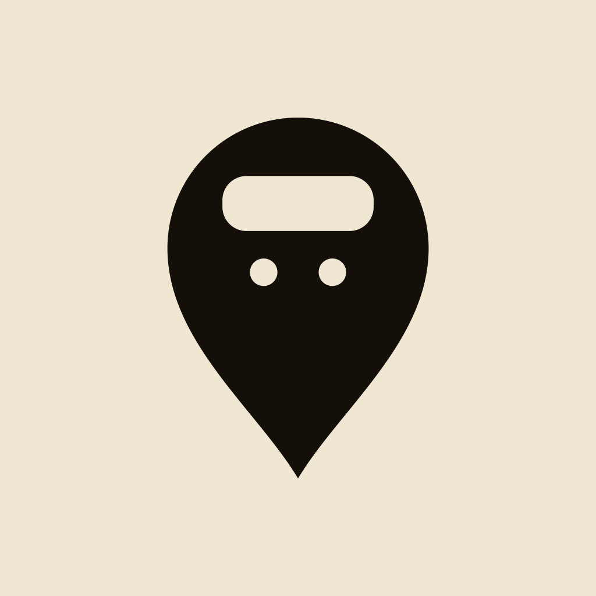

隱私權政策
Gaja Metro 是一款個人開發的釜山地鐵旅遊工具，我們盡量少碰你的資料。
我們不做的事
不需註冊或登入、不收集你的姓名或聯絡資訊，也沒有第三方分析追蹤。
位置
在你授權下，App 會用裝置定位顯示最近車站與規劃路線。定位只在你的裝置上使用，不會上傳到我們的伺服器（本 App 沒有自己的伺服器）。
地點搜尋
當你搜尋地點時，你輸入的關鍵字與目前地圖的中心座標會傳送給 Kakao 的地點搜尋服務以取得結果，這部分受 Kakao 的隱私政策規範。
最近搜尋
你在搜尋中點開過的地點（最多 10 筆）只存在你的裝置上，不會上傳，也不會同步到 iCloud；可以隨時在搜尋畫面刪除或全部清除。
路線規劃與導航
規劃路線時，App 會把出發點、目的地與附近車站出口的座標傳送給 Apple 的地圖服務，以計算實際步行時間；當你選擇步行前往，App 會把目的地交給 Apple 地圖開啟。這些都受 Apple 的隱私政策規範。
你的收藏
收藏的地點，以及你加上的暱稱、備註、連結和照片，都儲存在你的裝置上。若裝置已登入 iCloud，這些資料也會透過你自己的 iCloud 帳號同步到你的其他裝置，存放於 Apple 的伺服器並受 Apple 隱私政策規範。開發者無法讀取你的收藏內容。
共享清單
當你把清單分享給他人，受邀的人可以查看並編輯該清單裡的地點、備註、連結和照片，也會看到你的 iCloud 名稱。共享清單存放在建立者的 iCloud 中；建立者可以隨時停止分享或刪除清單，受邀者也可以隨時退出。
照片
App 只會讀取你在系統照片選擇器中挑選的照片，看不到相簿裡的其他照片；照片會先壓縮再儲存。只有當你把照片存回相簿時，系統才會詢問是否允許 App 加入照片。
政策變更
若本政策有變更，會更新此頁並修改上方的生效日期。
聯絡我們
Privacy Policy (English)
Effective 8 October 2026. The Chinese version above prevails.
Gaja Metro is a Busan metro guide made by an individual developer. It has no sign-in, collects no name or contact details and uses no third-party analytics or tracking. The app has no server of its own.
Location — with your permission, your location is used on your device to show the nearest station and plan routes. It is not uploaded to us.
Place search — the keywords you type and the map's centre coordinate are sent to Kakao's place search to get results, under Kakao's privacy policy.
Recent searches — up to 10 places you opened from search are kept on your device only, never uploaded or synced; you can delete them in the search screen.
Routes — origin, destination and nearby exit coordinates are sent to Apple's map services to estimate walking times, and a destination is handed to Apple Maps when you choose to walk there, under Apple's privacy policy.
Saved places — saved places and your nicknames, notes, links and photos are stored on your device and, if you are signed in to iCloud, synced through your own iCloud account. The developer cannot read them.
Shared lists — people you invite can view and edit the list's places, notes, links and photos, and see your iCloud name. Shared lists are stored in the creator's iCloud; the creator can stop sharing or delete a list and participants can leave at any time.
Photos — the app only reads photos you pick in the system photo picker and compresses them before saving. It asks for permission only when you save a photo back to your library.
Contact — kevin95353@icloud.com